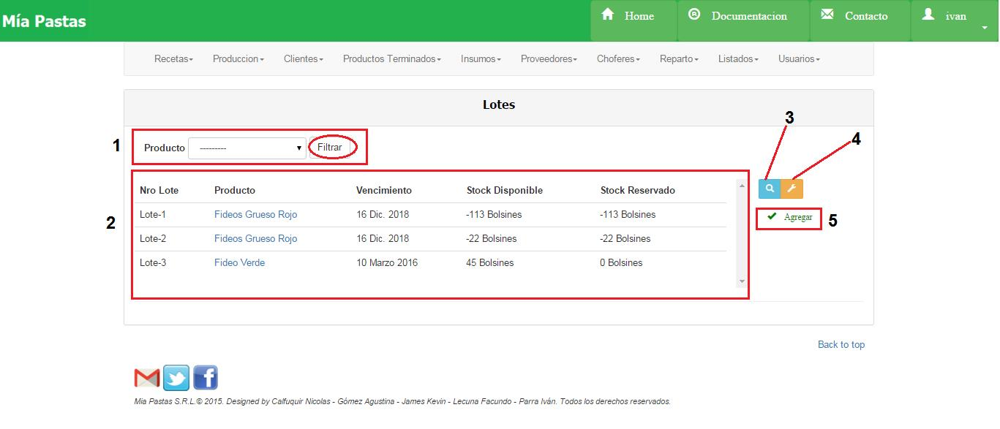
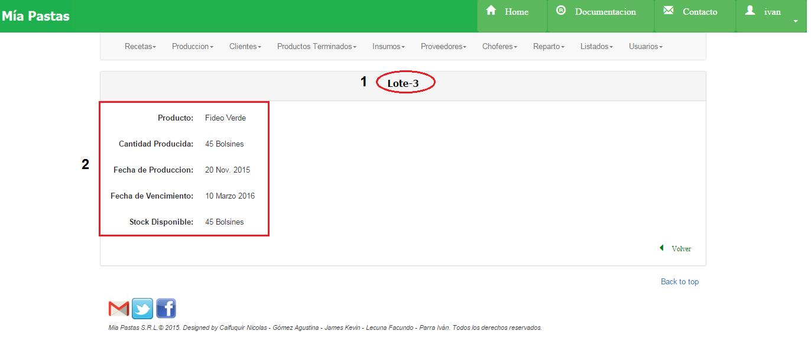
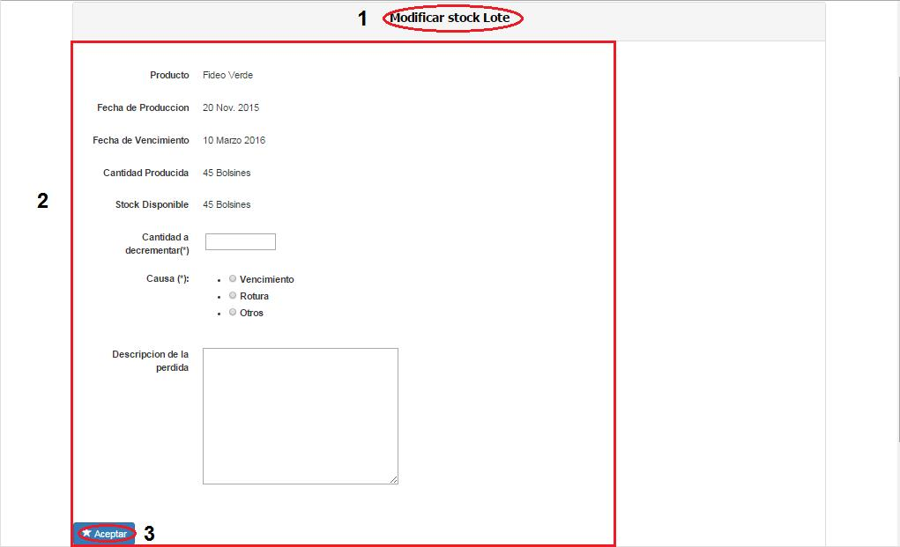
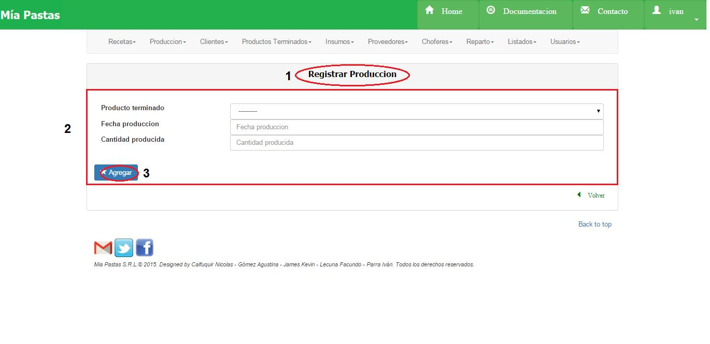

Producción¶
- Es el sector de filtrado, se podrá filtrar por tipo de producto.
- Área de resultado del filtro donde se mostrará número de lote, nombre del producto vencimiento, stock disponible, stock reservado. De no haberse realizado ningún filtro mostrará todas las recetas existentes. Al hacer click en Producto mostrará todos los datos del producto terminado asociado.
- El icono de lupa sirve para mostrar más detalle sobre el ítem seleccionado. De no seleccionar previamente un ítem aparecerá un mensaje de error.
- El icono de llave sirve para realizar una modificación sobre el ítem seleccionado. Para esto se deberá hacer click previamente sobre el ítem deseado. De no seleccionar previamente un ítem aparecerá un mensaje de error.
- Registrar una Nueva Producción.
Consultar Lote¶
Seleccionar un lote haciendo click sobre el deseado y sobre el ícono de lupa.
Como vemos, en (1) vemos el nombre del Lote seleccionado, y en la sección (2) vemos los datos de ese lote.
Modificar Stock de Lote¶
Seleccionar con un click el lote a modificar stock, luego hacer click sobre el ícono de modificar.
- Nombre de la sección en la que nos ubicamos, (2) descripción del lote a modificar, (3) guardar los cambios del lote.
Alta Lote¶
- Nombre de la sección en la que nos ubicamos, (2) descripción del lote a crear, (3) botón de guardar.